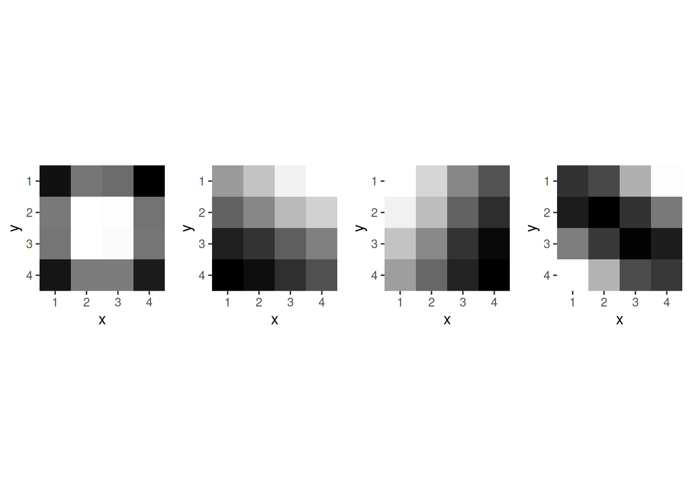

── Attaching core tidyverse packages ──────────────────────── tidyverse 2.0.0 ──
✔ dplyr 1.1.4 ✔ readr 2.1.5
✔ forcats 1.0.1 ✔ stringr 1.5.2
✔ lubridate 1.9.4 ✔ tibble 3.3.0
✔ purrr 1.1.0 ✔ tidyr 1.3.1
── Conflicts ────────────────────────────────────────── tidyverse_conflicts() ──
✖ dplyr::filter() masks stats::filter()
✖ dplyr::lag() masks stats::lag()
ℹ Use the conflicted package (<http://conflicted.r-lib.org/>) to force all conflicts to become errors
Pour bien comprendre comment sont décomposées les images en bloc de 16 par 16, on peut créer une matrice avecdes cases numérotées et constater comment elle est transformée.
Un bloc de 1- pixels est un individu à 16 variables.
On va travailler sur la fameuse image de l’album Abbey Road des Beatles.
Pour la charger avec R, on utilise le package imager et la fonction load.image. puis la fonction grayscalepour bien s’assurer que l’image est codée en niveaux de gris.
library(imager)image <-load.image('img/abbey_road.jpg')image <-grayscale(image)df_origine <-image %>% as.data.framep_origine <-ggplot(df_origine,aes(x,y))+geom_raster(aes(fill=value)) +scale_y_continuous(trans=scales::reverse_trans(), expand =c(0,0)) +## pour mettre l'image dans le bon sens et supprimer les bors grisscale_x_continuous(expand=c(0,0)) +scale_fill_gradient(low="black",high="white") +## pour le noir et blanctheme(legend.position ="none")p_origine
L’objet obtenu est un array dont la première dimension est le nombre de pixels en ligne et la seconde dimension le nombre de pixel en colonnes. La troisème dimension est la profondeur et correspondrait au temps dan sun film par exemple et la dernière dimension est la couleur (on a donc 3 valeurs possibles sur cette dernière dimension dans le cas d’une image RGB et 1 dans le cas d’une image en niveau de gris).
Si on se concentre sur les deux premières dimensions, on a donc une matrice dont la valeur est le niveau de gris du pixel correspondant.
dim(image)
[1] 1024 768 1 1
gray_channel <- image[,,1,1]gray_channel[1,1]
[1] 0.1529412
Pour rentrer dans le formalisme de l’ACP, on a besoin qu’une ligne soit un individu et une colonne une variable. Ici, le choix nous revient de définir comme on le souhaite ce qu’est un individu et une varaible.
On va découper l’image en buffer carré (patch, micro image) de coté \(bs.\) Un individu sera un patch et une variable sera le niveau de gris dans un pixel particulier du patch.
On a donc \(bs^2\) variables et \(N_{buf} = (height/bs) * (width/bs)\) buffers/individus.
# Set block size to 4x4block_size <-4# Extract blocks for each color channel in parallelimage_blocks <-extract_blocks_parallel(gray_channel, block_size)dim(image_blocks)
Réduction de dimension par ACP
On va maintenant mettre en oeuvre une ACP, pour détermnier les composantes principales et on ne gardera quelques composantes pour réduire la dimension. On utilise FactoMineR.
Les valeurs propres nous donnent la quantité d’information contenu par chaque composante.
eigen_restreint <- images_pca$svd$V
On constate que la première composante contient à elle toute seule 89.0652348\(\%\) d’inertie. Ce qui signifie qu’en écrivant chaque buffet comme un nombre réel multiplé par le premier buffer on recontruit presque \(90\%\) de l’information. Dans ca cas on a juste besoin de stocker
la matrice \(1\times bs^2\) qui permet de reconstruire les 16 variables initiales avec l’information contenu dans ce premier buffer,
les coefficients que chaque buffer individu attribue à ce premier buffer, soit \(N_{buf}\)
On passe donc \(N_{buf} * 16\) réels à stocker à \(N_{buf} + bs^2\) si on ne garde qu’une seule composante ou \(2 N_{buf} + bs^2\) si on en garde 2.
Les vecteurs propres sont donnés par
eigen_restreint <- images_pca$svd$V
On sait q’un vecteur propre correspond à un patch de \(bc\times bs\), on peut donc les visualiser sous cette forme
list_eigen <-lapply(1:block_size^2, function(i){ X_restreint <-matrix(images_pca$svd$V[,i], ncol =4, nrow =4) image_eig <-as.cimg(array(X_restreint, dim =c(4,4,1,1))) p <- image_eig %>%as.data.frame() %>%ggplot(aes(x,y))+geom_raster(aes(fill=value)) +scale_y_continuous(trans=scales::reverse_trans(), expand =c(0,0)) +## pour mettre l'image dans le bon sens et supprimer les bors grisscale_x_continuous(expand=c(0,0)) +scale_fill_gradient(low="black",high="white") +## pour le noir et blanctheme(legend.position ="none") +coord_fixed()return(p)})ggarrange(plotlist = list_eigen, ncol =4)
$`1`

$`2`
$`3`
$`4`
attr(,"class")
[1] "list" "ggarrange"
Reconstruction avec une seule composante principale
new_coord <- images_pca$ind$coordreconstruction <- new_coord[, 1, drop =FALSE]%*%t(images_pca$svd$V)[1,] n_row_block <-dim(image)[1]/block_sizen_col_block <-dim(image)[2]/block_sizeX_reconstruction_list <-lapply(1:n_col_block, function(j){ list_rows <-lapply(1:n_row_block, function(i){matrix( reconstruction[(j-1)*n_row_block + i,], ncol = block_size) })do.call(rbind, list_rows)} )X_reconstruction <-do.call(cbind, X_reconstruction_list)df_1 <-as.cimg(array(X_reconstruction, dim=dim(image))) %>% as.data.framep_1 <-ggplot(df_1,aes(x,y))+geom_raster(aes(fill=value)) +scale_y_continuous(trans=scales::reverse_trans(), expand =c(0,0)) +## pour mettre l'image dans le bon sens et supprimer les bors grisscale_x_continuous(expand=c(0,0)) +scale_fill_gradient(low="black",high="white") +## pour le noir et blanctheme(legend.position ="none")
new_coord <- images_pca$ind$coordreconstruction_2 <- new_coord[, 1:2]%*%t(images_pca$svd$V)[1:2,] X_reconstruction_list_2 <-lapply(1:n_col_block, function(j){ list_rows <-lapply(1:n_row_block, function(i){matrix( reconstruction_2[(j-1)*n_row_block + i,], ncol = block_size) })do.call(rbind, list_rows)} )X_reconstruction_2 <-do.call(cbind, X_reconstruction_list_2)df_2 <-as.cimg(array(X_reconstruction_2, dim=dim(image))) %>% as.data.framep_2 <-ggplot(df_2,aes(x,y))+geom_raster(aes(fill=value)) +scale_y_continuous(trans=scales::reverse_trans(), expand =c(0,0)) +## pour mettre l'image dans le bon sens et supprimer les bors grisscale_x_continuous(expand=c(0,0)) +scale_fill_gradient(low="black",high="white") +## pour le noir et blanctheme(legend.position ="none")